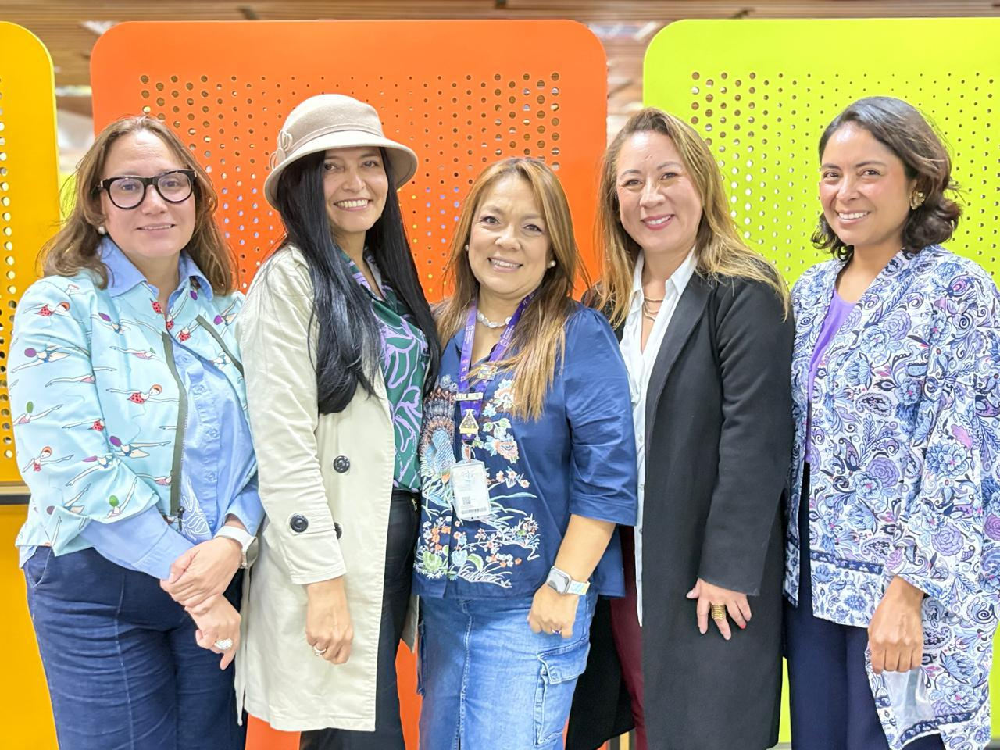

Un colectivo interdisciplinario de la universidad pública que transforma la conversación sobre inteligencia artificial en criterios, formación y orientación institucional con sentido ético y pedagógico.
La rápida incorporación de la inteligencia artificial (IA) en la educación superior ha abierto nuevas posibilidades para la docencia, la investigación y la extensión, pero también ha generado desafíos asociados a su uso acrítico, fragmentado y descontextualizado. En este escenario surge el colectivo viejIAs, una buena práctica universitaria orientada a promover la apropiación crítica, ética y situada de la IA en la principal universidad pública de Colombia.
La iniciativa ha articulado espacios de formación docente, reflexión interdisciplinaria, experimentación pedagógica y construcción colectiva de criterios para el uso de estas tecnologías en actividades universitarias. A partir de las interacciones, los ejercicios y la visión compartida construida en el colectivo, han surgido nuevas líneas de trabajo que hoy fortalecen procesos institucionales más amplios: contribuciones a la formación docente, participación en la definición de lineamientos institucionales sobre IA, replicabilidad en otras facultades y proyección hacia iniciativas estratégicas de la región Bogotá en salud e IA.
La IA generativa transformó con rapidez las prácticas pedagógicas, administrativas y evaluativas antes de que existieran criterios compartidos, orientaciones suficientes o espacios de reflexión institucional.
Se requería un espacio universitario que permitiera a la comunidad académica comprender la IA más allá de su dimensión instrumental: sus implicaciones pedagógicas, éticas, epistémicas e institucionales.
El uso de IA sin criterios compartidos amenazaba la autoría, la integridad académica, el pensamiento crítico y la responsabilidad institucional frente a tecnologías emergentes.
Las universidades necesitaban orientar la incorporación de estas tecnologías sin caer en respuestas improvisadas o acríticas, fortaleciendo la capacidad de docentes e investigadores para interactuar con la IA sin subordinarse a ella.
viejIAs nació como una respuesta colectiva a una necesidad institucional emergente: acompañar la adopción de la IA desde la universidad pública, con criterio crítico, compromiso ético y sensibilidad frente a los contextos reales de uso. Esta preocupación ya había sido reconocida en publicaciones previas del colectivo, que insisten en que la IA debe potenciar lo humano, no reemplazarlo.
La necesidad era especialmente relevante en una comunidad académica amplia, diversa y con fuertes responsabilidades en formación, investigación y proyección social. No se trataba solo de enseñar el uso de herramientas, sino de abrir conversaciones críticas sobre sus implicaciones profundas.
Promover una apropiación crítica, ética y situada de la inteligencia artificial en la universidad pública mediante un colectivo interdisciplinario orientado a la formación, la reflexión institucional y la apertura de nuevas líneas de acción.
Fortalecer las capacidades de la comunidad académica para comprender y emplear la inteligencia artificial de manera crítica y con responsabilidad académica.
Generar espacios de diálogo interdisciplinario sobre las implicaciones pedagógicas, éticas e institucionales de la IA.
Contribuir a la construcción de lineamientos y discusiones institucionales sobre el uso de IA en docencia, investigación y extensión.
Propiciar la emergencia de nuevas líneas de trabajo derivadas del colectivo, en articulación con procesos estratégicos de la universidad y agendas regionales vinculadas con salud e inteligencia artificial.
Componente técnico
Plataforma tecno-pedagógica basada en IA: la iniciativa articula un conjunto de tecnologías digitales centrado en el uso de IA generativa y agentes conversacionales como soporte para la experimentación académica. Estas herramientas se han incorporado a procesos de formación, diseño pedagógico y análisis crítico, permitiendo a la comunidad académica interactuar con herramientas de IA en contextos reales de uso.
El valor innovador de este componente no radica únicamente en la tecnología empleada, sino en su capacidad para configurar entornos de aprendizaje activos en los que se exploran capacidades, sesgos, limitaciones y posibilidades de aplicación en docencia, investigación y extensión.
Componente de gobernanza
Modelo de gobernanza y construcción de capacidades institucionales: este componente se expresa en la creación de una comunidad interdisciplinaria de práctica conformada por profesoras e investigadoras de diversas áreas del conocimiento, lo que fortalece la pluralidad de enfoques y evita una visión exclusivamente tecnológica del fenómeno.
Como innovación metodológica, se estructuran recomendaciones institucionales mediante acrónimos que facilitan la apropiación y estandarizan la comunicación:
Una línea de evolución que muestra el crecimiento y consolidación de viejIAs como práctica con incidencia real.
Surge como respuesta colectiva a una necesidad urgente: acompañar la incorporación de la IA en la universidad pública con criterio crítico y compromiso ético.
Se generan espacios de formación docente, conversaciones interdisciplinarias y ejercicios de reflexión crítica sobre las implicaciones pedagógicas, éticas e institucionales de la IA.
Se articulan talleres, ejercicios de apropiación crítica y creación de agentes conversacionales. El colectivo crece hasta superar los 180 integrantes iniciales.
viejIAs contribuye a la revisión de 22 guías de 19 instituciones de América Latina y participa en la construcción de lineamientos para la Universidad Nacional de Colombia.
Hito institucional clave: la Facultad de Ingeniería, sede Bogotá, adopta los lineamientos de IA propuestos por viejIAs, en una comunidad de alrededor de 7.000 estudiantes.
La experiencia se replica en las facultades de ciencias de la salud, evidenciando capacidad de adaptación a otros campos y pertinencia en escenarios donde la dimensión ética resulta especialmente sensible.
viejIAs proyecta su impacto más allá del campus, con la apertura de nuevas vertientes estratégicas — ConfIA y NEXO-IA — que fortalecen procesos institucionales más amplios y contribuyen a la agenda regional en salud e IA.
viejIAs se consolida como un espacio universitario generador de capacidades, criterios y visión institucional, con creciente convocatoria y proyección regional.
Acciones complementarias que posibilitaron pasar de la exploración inicial a la construcción de una cultura de reflexión y uso responsable de la IA.
Espacios de formación en torno a la IA y sus implicaciones pedagógicas, diseñados para fortalecer capacidades críticas en la comunidad académica.
Discusiones interdisciplinarias y ejercicios prácticos que situaron la IA frente a problemáticas concretas de la vida universitaria.
Exploración y creación de agentes conversacionales como herramientas pedagógicas, desde una perspectiva crítica y contextualizada.
Producción de guías, documentos y recursos que permitieron consolidar y difundir la experiencia, incluyendo revisión de 22 guías de 19 instituciones latinoamericanas.
Incidencia en conversaciones institucionales sobre lineamientos de IA en docencia, investigación y extensión, con aportes concretos adoptados por la Facultad de Ingeniería.
Curso "IA aplicada a la docencia e investigación en Educación Superior", abierto a la comunidad interna y externa a la universidad.
Taller en la Universidad Nacional de la Patagonia San Juan Bosco, Argentina (50+ docentes) y taller en la Universidad Complutense de Madrid, España (20 participantes).
Tres prácticas del colectivo viejIAs publicadas en el libro Buenas prácticas en TIC: mujeres en las IES de Iberoamérica, con visibilidad en MetaRed.
Adopción de lineamientos institucionales en la Facultad de Ingeniería, sede Bogotá — impactando aproximadamente 300 docentes y 7.000 estudiantes, con incidencia directa en la orientación de procesos académicos.
Marcos metodológicos con acrónimos: CUIDAMOS–IA, REFLEXIONA–IA y TEJEMOS–IA, que facilitan la apropiación, reducen la carga cognitiva y estandarizan la comunicación institucional.
Replicabilidad en Ciencias de la Salud — evidencia de adaptación a otros campos del conocimiento y pertinencia en escenarios de alta sensibilidad ética y profesional.
Transferencia internacional: taller en la Universidad Nacional de la Patagonia San Juan Bosco (Argentina) con 50+ docentes y taller en la Universidad Complutense de Madrid (España) con 20 participantes.
Publicaciones académicas: tres prácticas en el libro Buenas prácticas en TIC: mujeres en las IES de Iberoamérica y un artículo en proceso de publicación, con visibilidad en MetaRed.
Nuevas vertientes estratégicas: ConfIA y NEXO-IA, proyectando el impacto del colectivo hacia la región Bogotá en salud e inteligencia artificial.
viejIAs no se agota dentro de la universidad. Su visión proyecta impacto en la región Bogotá y ha generado vertientes que fortalecen procesos institucionales más amplios.
Formación de más de 230 docentes, adopción de lineamientos en Facultad de Ingeniería y consolidación como comunidad de práctica con criterios institucionales.
Replicabilidad en Ciencias de la Salud, educación continua con participantes externos y diálogo interdisciplinario entre campos del conocimiento.
Articulación con el ecosistema científico de la ciudad en salud e IA, incubación de nuevas agendas y fortalecimiento de procesos estratégicos regionales.
Estas iniciativas son vertientes emergentes derivadas de la visión construida en viejIAs — no sustitutos ni proyectos que desplacen el foco principal del colectivo.
Centrado en formación para el sector salud con énfasis en ética, uso responsable de la IA y fortalecimiento de capacidades. Una iniciativa que lleva los principios del colectivo a un campo de alta sensibilidad ética y profesional.
Orientado a la interacción humano-máquina desde una perspectiva crítica, situada y coherente con los principios promovidos por el colectivo. Fortalece la visión de una IA que potencia, no reemplaza, el juicio humano.
viejIAs consolidó un entorno universitario donde la IA puede ser discutida, experimentada y orientada sin perder de vista el valor del juicio humano y la responsabilidad académica.
Comunidad capaz de incidir en lineamientos, expandirse a otros campos disciplinares y abrir nuevas posibilidades de formación dentro y fuera de la universidad.
Más que un espacio formativo, viejIAs demostró que los colectivos académicos pueden desempeñar un papel estratégico en la transformación digital de las instituciones de educación superior.
La experiencia mostró su capacidad generativa para incubar nuevas líneas de trabajo con proyección estratégica regional en salud e inteligencia artificial.
viejIAs muestra que la apropiación universitaria de la inteligencia artificial exige mucho más que formación técnica. Requiere espacios sostenidos de conversación, reflexión crítica, experimentación situada y construcción colectiva de criterios. Su principal contribución ha sido la creación de un entorno universitario en el que la IA puede ser discutida, experimentada y orientada sin perder de vista el valor del juicio humano, la responsabilidad académica y la deliberación institucional.
La experiencia demuestra también que los colectivos académicos pueden desempeñar un papel estratégico en la transformación digital de las instituciones de educación superior. En este sentido, viejIAs ha funcionado no solo como un espacio formativo, sino como una comunidad generadora de orientación institucional, capaz de incidir en lineamientos, expandirse a otros campos disciplinares y abrir nuevas posibilidades de formación dentro y fuera de la universidad.
Más que una experiencia cerrada en sí misma, viejIAs comienza a consolidarse como un espacio universitario generador de capacidades, criterios y visión institucional, con proyección hacia agendas estratégicas de la región Bogotá en salud e inteligencia artificial.
"Potenciar lo humano, no reemplazarlo."

viejIAs es una experiencia construida y sostenida por un grupo de profesoras e investigadoras de la Universidad Nacional de Colombia, comprometidas con una visión crítica, ética y situada de la inteligencia artificial en la universidad pública. Su trabajo colectivo combina experticia disciplinar diversa, liderazgo académico y una profunda convicción sobre el papel de la universidad en la orientación de las tecnologías emergentes.
El capital relacional construido por el colectivo ha facilitado la conexión entre facultades, procesos de formación y debates institucionales, haciendo posible pasar de la conversación a la incidencia real. Este colectivo es el núcleo vivo donde se construyen los criterios, se debaten las ideas y se proyectan las nuevas agendas con proyección institucional, nacional e internacional.
Para consultas, colaboraciones o más información sobre viejIAs
Herrera-Quintero, L. K., Sánchez-Torres, J. M., Chaparro-Diaz, L., Carreño-Moreno, S., & Sánchez-Mendoza, Y. E. (2025). Artificial Intelligence in Engineering Education: Enhancing Human Capabilities, Not Replacing Them. Ingeniería e Investigación, 45(1), 1–3. https://doi.org/10.15446/ing.investig.121430
Sánchez-Torres, J. M., Chaparro-Diaz, L., Herrera-Quintero, L. K., Carreño-Moreno, S., & Sánchez-Mendoza, Y. E. (2025). Recomendaciones para el uso de la Inteligencia Artificial en actividades de docencia e investigación. Memoria Justificativa. Bogotá.
Sánchez-Torres, J. M., & Herrera-Quintero, L. K. (2025). IA en la universidad: primeros pasos hacia una guía institucional. En A. Herrera Mendoza, B. Veliz Plascencia, E. Sánchez Chablé, & S. Verdejo Pastor (Coords.), Buenas prácticas en TIC: mujeres en las IES de Iberoamérica (pp. 93–104). Editorial Universidad de Guadalajara. https://doi.org/10.32870/9786075818405
Carreño-Moreno, S., & Herrera-Quintero, L. K. (2025). Mujeres liderando el aprendizaje en IA: resultados de la experiencia en la UNAL. En A. Herrera Mendoza, B. Veliz Plascencia, E. Sánchez Chablé, & S. Verdejo Pastor (Coords.), Buenas prácticas en TIC: mujeres en las IES de Iberoamérica (pp. 212–218). Editorial Universidad de Guadalajara. https://doi.org/10.32870/9786075818405